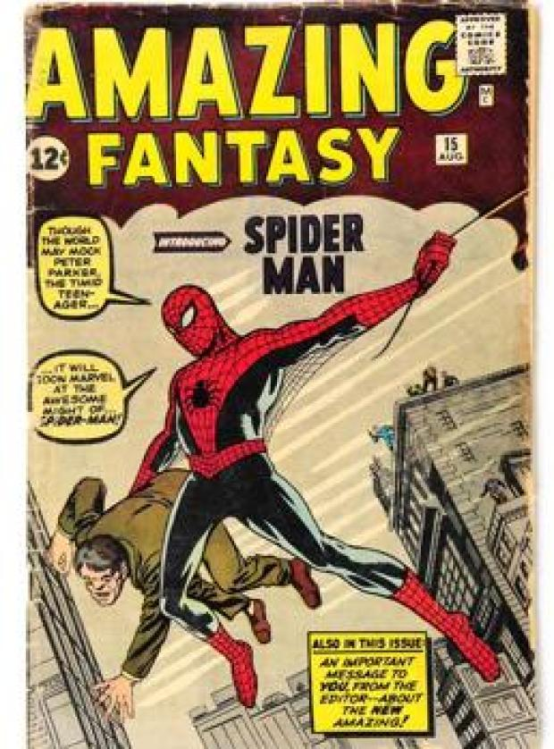
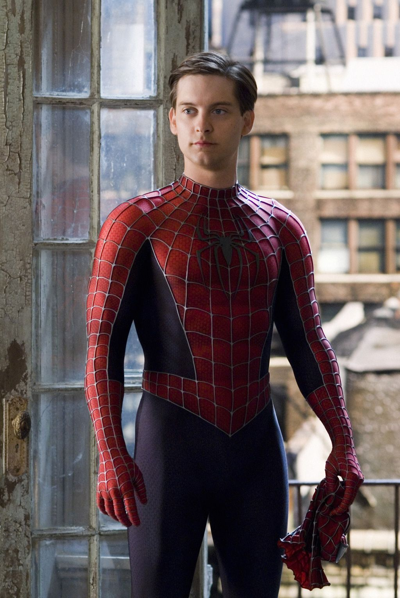
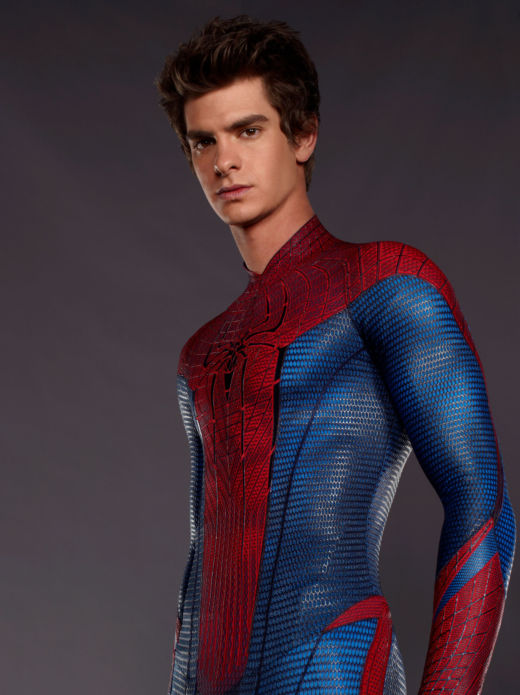
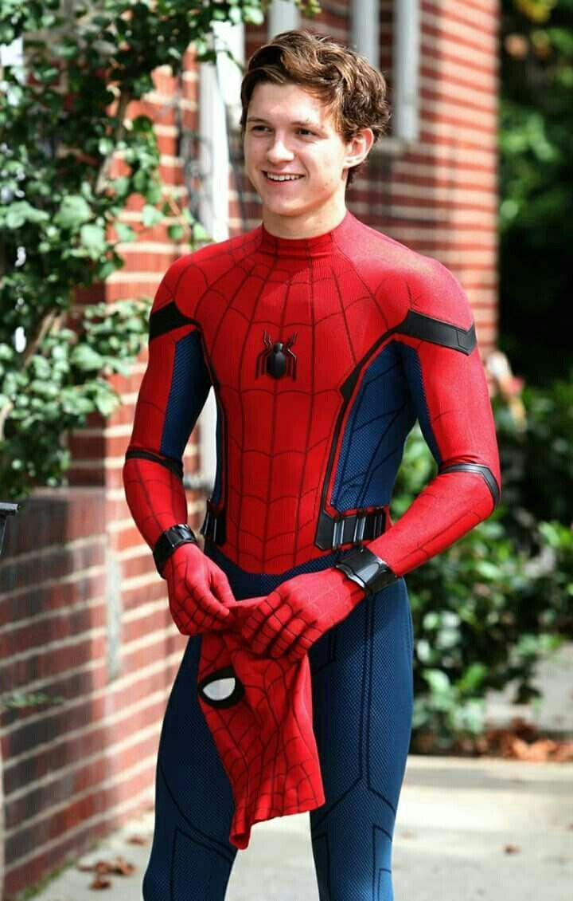
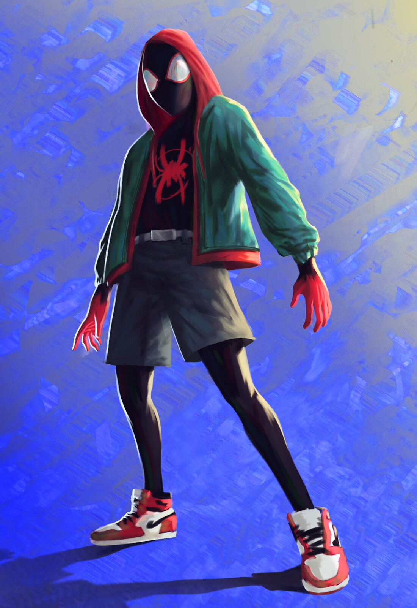

Spiderman.
 Spiderman |
|---|
 Spiderman (Tobey Maguire) |
 Spiderman (Andrew Garfield) |
 Spiderman (Tom Holland) |
 Spiderman (Miles Morales) |
| Página Oficial de MARVEL | Facebook Oficial de MARVEL | Twitter Oficial de MARVEL | Instagram Oficial de MARVEL |
|---|